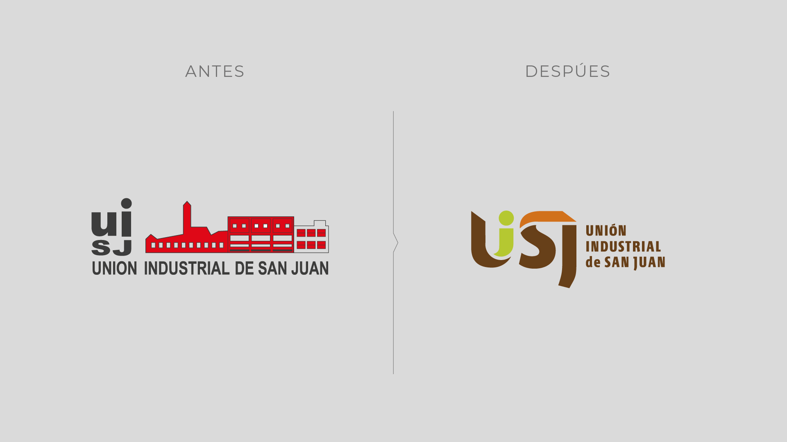
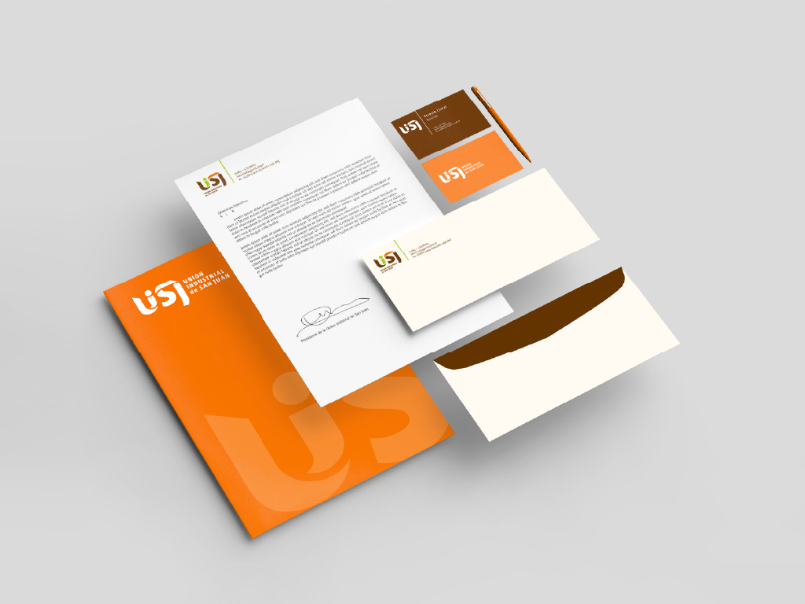
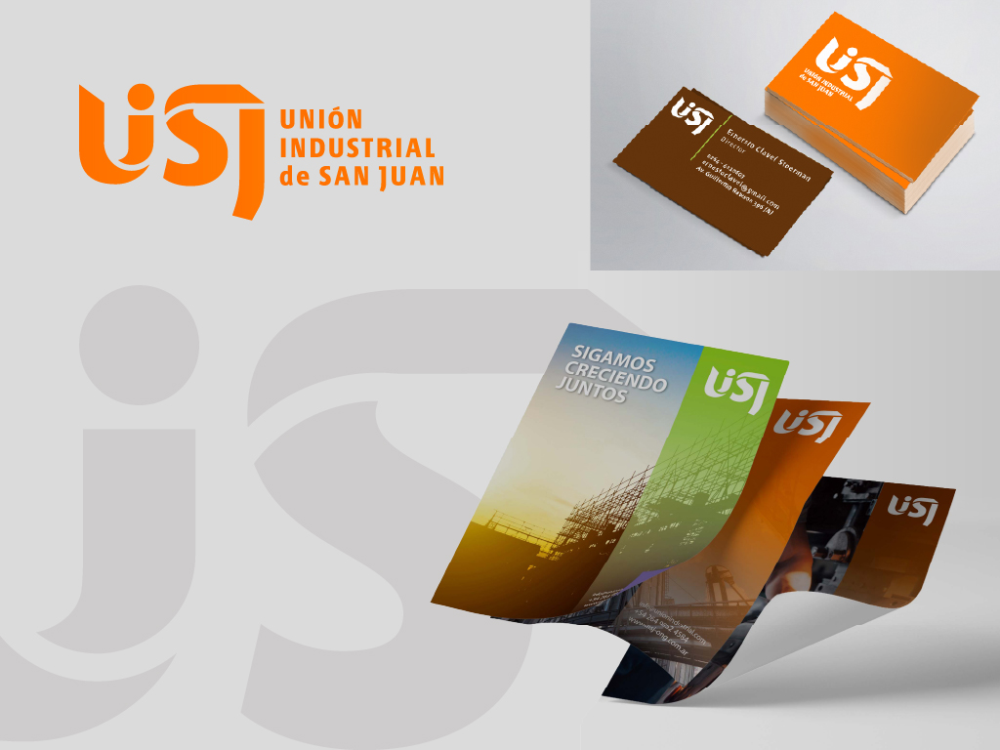

03 / 06
UISJ
Identidad institucional · Branding
Rediseño de identidad institucional y creación de un sistema gráfico unificado.

El proyecto
Una revisión de la identidad institucional permitió ordenar sus recursos visuales y construir un sistema gráfico más claro, coherente y reconocible.

